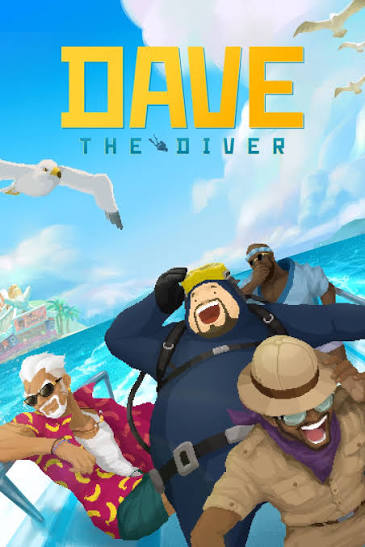

Dave The Diver
Explore as profundezas do oceano durante o dia e administre um restaurante de sushi à noite nesta aventura cheia de descobertas.
Ir para DownloadsSobre o Jogo
DAVE THE DIVER é uma aventura que mistura exploração submarina, pesca e gerenciamento de restaurante. Durante o dia, Dave mergulha no misterioso Buraco Azul para descobrir novas espécies marinhas, coletar recursos e completar missões. À noite, ele ajuda a administrar um restaurante de sushi, atendendo clientes e utilizando os ingredientes encontrados no oceano.
Desenvolvido pela MINTROCKET, o jogo combina cenários submarinos em 3D com personagens e elementos visuais em pixel art. Ao longo da jornada, o jogador encontra novos personagens, criaturas marinhas e atividades que ampliam a experiência.
Trailer Oficial
Requisitos do Sistema
Mínimos
- SO: Windows 10 (64-bit)
- Processador: Intel Core i3 Dual Core
- Memória: 8 GB de RAM
- Placa de vídeo: NVIDIA GeForce GTS 450 ou AMD Radeon HD 5570
- DirectX: Versão 11
- Armazenamento: 10 GB de espaço disponível
Recomendados
- SO: Windows 11 (64-bit)
- Processador: Intel Core i5 de seis núcleos ou Core i7 de quatro núcleos
- Memória: 16 GB de RAM
- Placa de vídeo: NVIDIA GTX 1060 3 GB ou AMD RX 480
- DirectX: Versão 11
- Armazenamento: 10 GB de espaço disponível